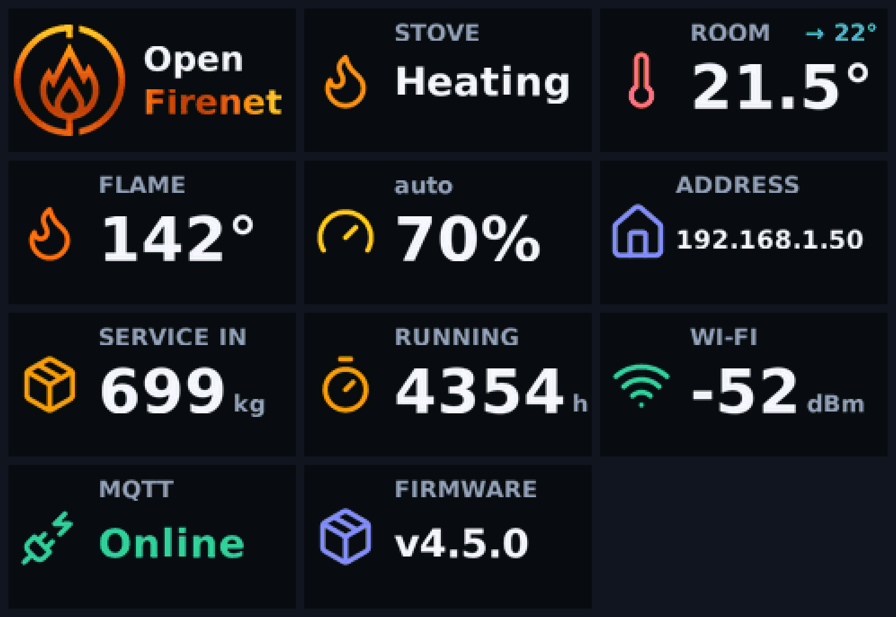
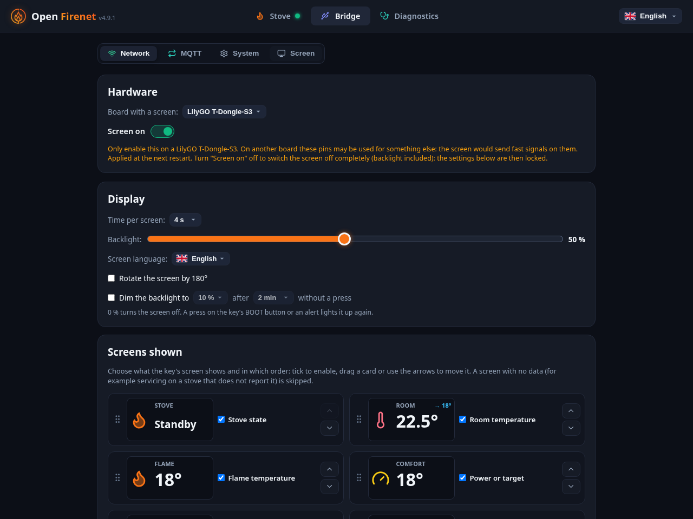

Lo schermo del LilyGO T-Dongle-S3 e dell'ESP32-S3 Pocket Dongle
Il LilyGO T-Dongle-S3 e l'ESP32-S3 Pocket Dongle integrano un display a colori compatto (da Open Firenet 4.5 per il T-Dongle-S3, 5.0 per il Pocket Dongle). Mostra lo stato della stufa a colpo d'occhio senza dover aprire la pagina web.

Informazioni visualizzate
Dopo un'animazione iniziale con il logo, i parametri si alternano ciclicamente a schermo: stato della stufa, temperatura ambiente con relativo valore impostato, temperatura di fiamma, potenza di riscaldamento (o temperatura comfort), indirizzo IP del bridge, pellet rimanente prima della manutenzione, ore di funzionamento, potenza del segnale Wi-Fi, stato di connessione MQTT e versione del firmware. Le schermate relative a dati non disponibili sulla stufa vengono automaticamente escluse dal ciclo.
In caso di anomalia, compare una schermata di avviso permanente: errore della stufa, coperchio del serbatoio aperto, mancata risposta della stufa o perdita del collegamento Wi-Fi.

Attivazione
Il display è disattivato per impostazione predefinita: su altre schede ESP32-S3 i pin corrispondenti potrebbero essere utilizzati per altri scopi. Attivatelo unicamente se utilizzate un vero LilyGO T-Dongle-S3 o un ESP32-S3 Pocket Dongle.
- Aprite l'interfaccia web del bridge, andate nella scheda Bridge e quindi nella sottoscheda Schermo.
- Selezionate LilyGO T-Dongle-S3 o ESP32-S3 Pocket Dongle come scheda con display e confermate il messaggio di avviso.
- Riavviate il bridge quando richiesto dalla pagina. Il display si accenderà mostrando il logo.
L'interruttore Schermo acceso consente di spegnere completamente lo schermo e la retroilluminazione in qualsiasi momento, preservando le impostazioni.
Personalizzazione

- Viste visualizzate: spuntate le schermate desiderate e trascinatele per definirne l'ordine di sequenza.
- Durata per schermata: impostabile da 2 a 30 secondi.
- Luminosità retroilluminazione: regolabile da 5 a 100%.
- Lingua dello schermo: italiano, inglese, francese, tedesco o spagnolo. Alla prima attivazione eredita la lingua della pagina web.
- Ruota lo schermo di 180°: utile nel caso in cui la chiavetta risulti orientata capovolta in base alla presa USB della stufa.
- Attenua dopo inattività: riduce la luminosità a un valore scelto (da 0 a 50%) dopo un intervallo di inattività (da 30 secondi a 1 ora). A 0% lo schermo va in standby completo.
- Pulsante BOOT della chiavetta: risveglia lo schermo se attenuato e passa alla schermata successiva quando è attivo. Anche una notifica di avviso o un cambio di stato della stufa riaccendono automaticamente lo schermo.
Le modifiche vengono salvate nella memoria permanente del dispositivo dopo aver fatto clic su Applica.
Note pratiche
- Durante le nostre prove, lo schermo assorbiva troppa corrente all'avvio, provocando il riavvio della stufa quando la chiavetta era collegata direttamente. Una prolunga USB ha risolto il problema.
- Open Firenet non gestisce display collegati ad altre schede ESP32.
Per domande o problemi relativi allo schermo: aprite una issue.